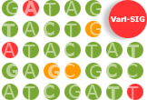

|
 |
||
|
VarI-SIG: Identification and annotation of genetic variants in the context of structure, function, and disease.GENERAL INFO:WHAT: A one-day special interest group meetingWHEN: 8:30 AM - 6:00 PM, July 9th, 2016 WHERE: Room Mockingbird 2, Swan Hotel, Orlando (FL), USA. VarI-SIG 2016 Meeting Preliminary Program 
SIG AIMS:The primary goal of the VarI-SIG is to outline and discuss the recent advances in the methodology for the annotation and analysis of genetic variants. Building upon the experience of the previous VarI-SIG and SNP-SIG editions:
We are interested in submissions describing original work in all the fields of genetic variants research including, but not limited to "genetic variants in": TOPICS OF INTEREST:
Databases, data mining algorithms and visualization tools for genetic variants analysisMethods for predicting regulatory/structural/functional impacts of genetic variants Personal Genomics, GWAS studies and SNV prioritization Population genomics and phylogenetic analysis |
|||